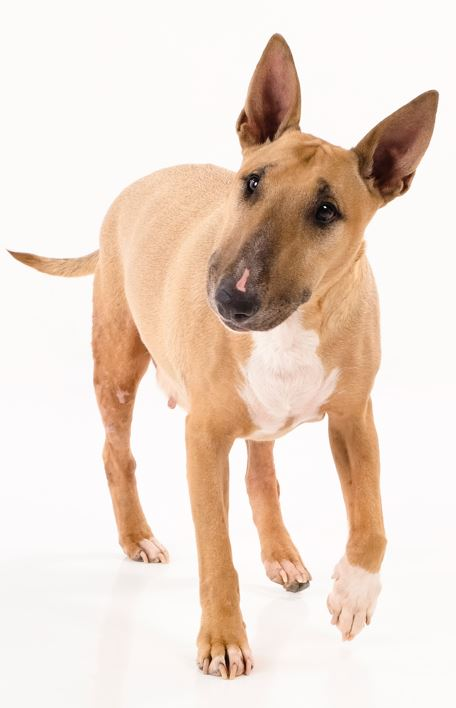

Mijn naam is Patricia Krens en ben 26 jaar oud. In acht jaar tijd heb ik verschillende soorten banen gehad. Zo heb ik gewerkt bij de Action, Pathé Scheveningen en ben ik al vijf jaar docent Nederlands. Toch ben ik niet tevreden over de vijf jaar die ik besteed heb aan Nederlands. Veel liever ben ik na aan het denken over codes en hoe ik websites zo mooi mogelijk kan maken. Het geeft mij veel voldoening om een website te maken en te zien dat het goed werkt. Verder heb ik ook vele verschillende hobby's: tekenen, het kijken van series, het spelen van games op de Playstation en Nintendo Switch en het lezen van fantasie- en stripboeken. Verder hou ik gigantisch veel van dieren. Waar ik vooral van hou zijn bull terriërs. Dit komt gezien zij heel eigenwijs zijn en ergens wel een hart van goud hebben. Op de afbeelding hieronder is mijn oude hond Jinnie te zien.
